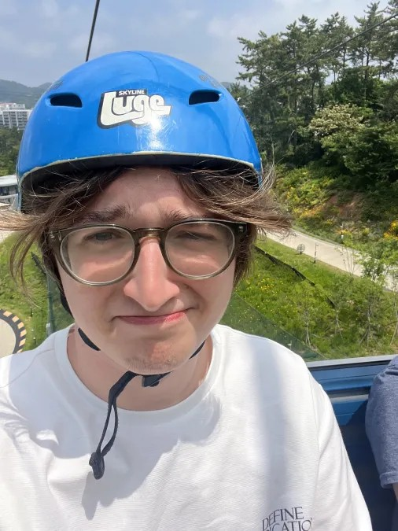

This image is of me when I went to a trip to South Korea.
I am a student of Michigan State University(MSU) studying how to become a modeler and animator so that onde day I can be a part of the game making process. I've always both admired and loved games since I can remember. This would explain why I want to be a part of this process.
To start, THIS IS MY OPNINION (LOL)! I'm sure my favorite games will change in the future as I constantly seem to have different favorites based on how recently I played each. That said, I do not neccessarily have much nostalgia when it comes to games. This is because I know that newer games tend to iterate upon past games. An example of this is Palworld having the Pokemon mechanics while also introducing a plethora of modern game mechanics. But, with that said, some games from the past really are great or have some things that grealty set them apart from other games. This would be something like Plants vs Zombies having a near perfect formula while also having a very hard time replicating what makes it so great without making a new game and it bringing in new concepts that ruin the game.
Let's start at the bottom, number five. Terraria is a very fun game about discovering a newly generated world and fighting tough enemies and bosses. Terraria released years ago back in 2011 which has continuously stayed relevant and has been updated over the years with each update bringing large content updates spicing up the game to a pretty decent degree. It is a very easily replayable game and is fun for both sanbox builders and pve focused players. Terraria also is kepy alive with its modding community providing insane amounts of new and refreshing content to the game sometimes making the game feel entirely different from its original make.
At four is Return of the Obra Dinn. This game was created by the same developer(s?) of Papers Please which is pretty obvious when comparing their art styles. Return of the Obra Dinn is a detective game where the player must figure out what happened to a ship (the Obra Dinn) returning to port with its crew missing. The tasks of the player are to find missing key information about each character and how they went missing. Return of the Obra Dinn is at number four for being so unique and having such a fun and interesting story.
Number three is Baldur's Gate III. Baldur's Gate III is a continued story of Baldur's Gate where the player is in an alien ship then later going on an adventure to save the world in a D&D type of playstyle. This game is without question in my top five and will probably remain their for many years. It was fun the first time and will continue to be afterword.
At two is lesser known game called Abiotic Factor. Abiotic Factor is a Half Life and SCP inspired game that takes on a sandbox genre. The player is tasked with trying to escape the facility that is falling apart while trying to figure out why it is happening at all. Now, SCP hass some of my favorite internet stories as well as it iterating upon Half Life... why wouldn't I love this game! I have spent so much time playing this game and still do playing each new update. My friends and I have had multiple play sessions of this game (which never happens with a game for us). ALthough, I have heard that Abtiotic Factor has literally ruined friendships... Play at your own risk.
And lastly at one is Sekiro: Shadows Die Twice. Ever since I played this I knew it would be my favorite. In this game you play as Sekiro, a shinobi, attempting to save his Lord, Kuro, in any way that he can. But before that he must get to his Lord and then find the path to saving him. I love this game so much. It is a yearly play for me. I hardly have any gripes with this game. I just love the world, the characters, the enemies, and the soundtrack (although pretty nonexistant for a From Software game). This game is so much fun each time and it even got a boss rush gamemode that was added a few years ago to allow players to fight all the bosses consecutively. I hardly believe that any game will beat this game on my list. I do forsee a future where Abiotic Factor does beat Sekiro, though.